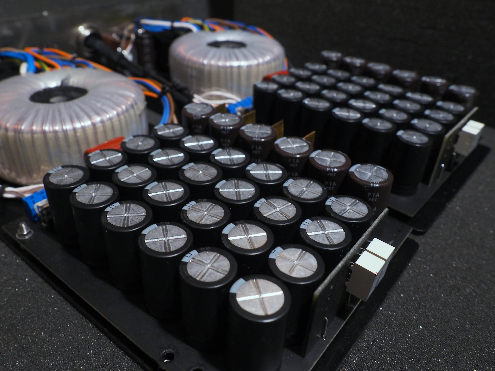

Silver Grand Mono II
“Silver Grand Mono” was finally created in 2006 year. It was breakthrough solutions at audio amplifier designing,concepts, solutions.
Tested by journalists, audiophiles, was voted as the best audio amplifier ever made, in many independend oppinions.
The revival of valve amplifiers dates back to Japan of the 70’s. It was where many ideas of valve amplifier designing were conceived.
Some of them have withstood the test of time and become standard solutions ever since, while others have been abandoned along the arduous and ever winding road to perfection.
The seventies saw the revival of vacuum tube amplifier in Japan. Since then some ground breaking applications have been introduced. Among others, these were Single Ended Triode, vacuum tube HT rectifier, AC heating, oil capacitors and silver transformers.
Nevertheless, what seems to have been an excellent practice yesterday is no longer good enough for us at the beginning of the third millennium. What we started to work on at Ancient Audio was to remodel our thinking about sound amplification and produce a “go-between” component which would in no way influence and impede the sound on its way from the source unit and speakers up to the listener’s ears.
It is not only the question of natural sound reproduction but the ability to convey intangible, but no less important, emotional information inherent in each type of music which discriminates the music system from a typical one. It is no longer “being there”, which some high-end audio manufacturers have managed to achieve, that really matters.
“Being a must” is still not enough. You must participate, be taken entirely away by its sheer beauty, emotional capacity and overall impact. And this is what we have, after ten years of extreme dedication and never-ending auditions, have eventually achieved.
Not just one more “the best amplifier” on the market. It is by far more than this. If we stopped at that, it would only mean still another technically perfect product. We have spent too much time, and put our souls into it to be satisfied by that.
We have managed to capture the essence of music which is a conglomerate of notes and artist’s individualism, along with a sense of place of the music performed.
What we present as our ultimate achievement can be roughly, even though not comprehensively enough summarized in a few sentences:
- Neither local nor global feedback, which could result in pulse shape degradation and harmonic distortion. Although the global feedback absence has become a routine solution, it is the absence of the local one that elevates, among other things, the sonic performance to exceptional levels. Needless to say, present day valve amplifier’s emitter or cathode follower sports 100% local feedback.
- Handpicked and best components available. It is worth mentioning 300B mesh plate tubes, Teflon capacitors, purest silver ribbon wiring for all inside electrical paths and specially designed, hand-made Teflon insulated speaker transformer with output silver wiring.
- A revolutionary MPS (mono power supply) – two piece outboard unit which eliminates any pernicious inter circuit and crossover influences. Each power supply unit has extremely low impedance, both as DC and audio band AC. A great bank of HT smoothing capacitors stores 1000 Joule of energy.
We proudly present our “Silver Grand Mono Amplifier, with dedicated outboard Mono Power Supply, which does not sonically resemble any of the hitherto known high-end single-ended triode amplifiers.
Its sheer impact, dynamic response and speed, the sense of space and the bottom end, as well as sharply focused images and multi-layered background convey a sense of presence to an unimaginable degree.
But what makes it the unrivalled amplifier is the way a listener is transferred into another dimension and seated face to face with the performance which keeps posing a question: “Is it really possible?
Never ever listened to anything like that! Wow!!” Don’t believe? Just sit back and listen! This is Ancient Audio. This is the way the music sounds!
" The Silver showed something more – classy hi-end devices differentiate – just to visualize it better – on a scale from 0 to 10. The Silver goes up to 15.
It may seem not being a big difference, but this is only a mirage...The sound depth is incredible – due to the extraordinary high resolution the virtual sources are drawn in a truly three-dimensional way and placed in a very big, natural space of the stage. The depth in the limits of a given sound event is so big, that I cannot compare it with anything.." High Fidelity No.65 October 2009

"In case of the Grand the easiest thing for me to say, is that the Ancient monoblocks are the best amplifier I ever heard – not only in my system, but in general ... " 6Moons

New model incorporated lot of minor improvings, the first is mechanical build. Four aluminium blocks gives not only elegant apperance, but also strong, vibrating free bases.
Faster capacitors, much shorter 300B filament signal path, low impedande HT regulators, and new wiring, applying soft Teflon over Litz principle cabling moved sound quality even more sophisticated to compare with first model.
First impression of Silver Grand Mono II sound shows it's incredible energy, and even faster transients. So, feeling of rhythm is immediately, even by delicate touches of strings. Music is full of vitality, however free of artificial sharpness.
Technical Specification:
- Parallel Single Ended Triode
- Four piece unit : two mono blocks with two outboard mono power supply components
- Hand made Teflon insulated pure silver output speaker transformer wiring,
- V-Cap Teflon / Tin Foil signal capacitors and carefully selected components
- No global or local feedback
- internal wiring with Teflon insulated pure silver ribbon,
- Large bank of filament ultra-fast smoothing capacitors ( 160 000 uF total)
- dedicated 300 B bias current meter
- Low impedance HT power supply
- Six independent mains transformers
- All voltages stabilised
- Auto bias of 300B tubes
- A large capacity of stored energy by HT capacitors ( over 1000 J )
- Output power per channel: 16 W / 4 – 8 ohm
- S/N ratio : over 100 dBA
- Sensitivity: 500 mV
- Non resonant, four aluminium blocks, each 250 x 350 x 60 mm high